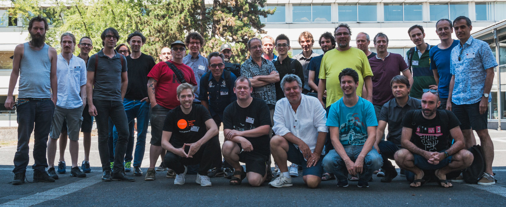

International Faust Conference (IFC-18)
July 17-18, 2018 -- Johannes Gutenberg University, Mainz, Germany
July 17-18, 2018 -- Johannes Gutenberg University, Mainz, Germany
Faust (Functional Audio Stream) is a functional programming language for sound synthesis and audio processing with a strong focus on the design of synthesizers, musical instruments, audio effects, etc. Faust targets high-performance signal processing applications and audio plug-ins for a variety of platforms and standards.
The core component of Faust is its compiler. It allows to "translate" any Faust digital signal processing (DSP) specification to a wide range of non-domain specific languages such as C++, C, JAVA, JavaScript, LLVM bit code, WebAssembly, etc. In this regard, Faust can be seen as an alternative to C++ but is much simpler and intuitive to learn.
Thanks to a wrapping system called "architectures," codes generated by Faust can be easily compiled into a wide variety of objects ranging from audio plug-ins to standalone applications or smartphone and web apps, etc. (check the Quick Tour of the Faust Targets section for an exhaustive list.
There are many ways to get started with Faust, choose the one that suits you the best:
ESP32-based boards can now be programmed with Faust! Check out our new tutorial to see how this works and start making absurdly cheap low-latency synthesizer modules and audio effects.
Discover a new series of tools for mass-interaction physical modeling in Faust!
View the evolution of the Faust project from 2004 to 2018! The visualization was done using Gource.
The Faust Award 2018 was attributed to iPlug 2, a free open source C++ audio plug-in framework, allowing developers to create audio plug-ins and apps across a wide range of formats from the same code, including graphical user interface and DSP components.